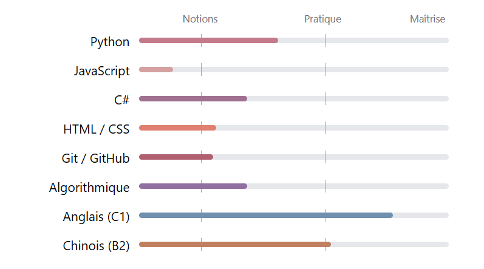

Candidate Concepteur.rice Développeur.euse d'Applications - ENI
Titulaire d'un Master 1 en LEA Anglais/Chinois - Techniques des Échanges Internationaux, je me forme intensivement en autodidacte depuis février 2026 en Back-end (Python et C# principalement) et en Front-end afin d'intégrer une formation diplômante et professionnalisante en développement web, chez l'ENI. Animée par le désir de maîtrise et la résolution de problèmes, j'accorde une grande importance à la théorie et aux bonnes pratiques pour construire des bases techniques solides, aliée à une pratique quotidienne progressive.
Apprentissage du code en autodidacte (Actuellement)
Cours en ligne : Exercism, WeLoveDevs, YouTube, Docstring, Coddy....
Étude approfondie de la logique algorithmique et de la théorie de la programmation. Développement d'un jeu de rôle (RPG) textuel pour manipuler variables, conditions et boucles. Création de mini sites web pour pratiquer la relation backend/frontend. Apprentissage des bonnes pratiques (principes SOLID) et du versioning avec Git/GitHub.
Master 1 LEA Anglais-Chinois et Techniques des Echanges Internationaux (2024)
UPJV - UFR des Langues, Amiens
Licence LEA Anglais-Chinois (2023 - Mention Bien)
UPJV - UFR des Langues, Amiens
Hôtesse / Sensibilisation pour l'EFS - Agence Fields&People (2025)
Communication et persuasion pour l'obtention de rendez-vous de don du sang. Développement de compétences relationnelles et de communication interpersonnelle.
Micro-entreprise : CrochetLand25 (2025 - Présent)
Création et gestion d'une micro-entreprise artisanale spécialisée dans les articles en crochet faits main. Gestion administrative, comptabilité, communication et relation client. SIRET : 10130804700014.
Stages en bibliothèque & librairie - BU de l'IUT d'Amiens & Pages d'Encre (2025)
Organisation, gestion des commandes, rangement (classification Dewey) et conseil client. Utilisation d'outils informatiques de gestion et système RFID. Rigueur et méthode dans le traitement de l'information.
Stage à l'Institut Confucius d'Arras (2024)
Traductions, relectures et corrections de documents culturels en chinois, comme des articles pour l'UNESCO (6 semaines). Rigueur syntaxique et linguistique, attention aux détails.
Mini jeu Pokémon (Python - en cours - Avril 2026)
Création d'un petit jeu type Pokémon, avec un scénario, une gestion d'inventaire, des combats, de la capture... en essayant de respecter les bonnes pratiques (SOLID, Architecture, ...)
Notion utilisées : Boucles, Conditions, Itérateurs et Générateurs, Création de classes, Héritages, Pygame (sons, time.sleep), Random...
Site de location de vélos (C#- en pause - Mars 2026)
Tentative de création d'un site de location de vélos en ligne à partir d'une spécification générée par IA
Notion utilisées : Création de base de données et controllers, Relation back-end/front-end, Json...
Mini RPG sur console (Python - premier projet - Février 2026)
Création d'un petit jeu de rôle classique, avec un scénario, une gestion d'inventaire et des combats
Notion utilisées : Boucles, Conditions, Création de classes, Héritages, Pygame (sons, time.sleep), Random...

Me joindre : crampon.megane.pro@gmail.com | 06.21.15.31.62